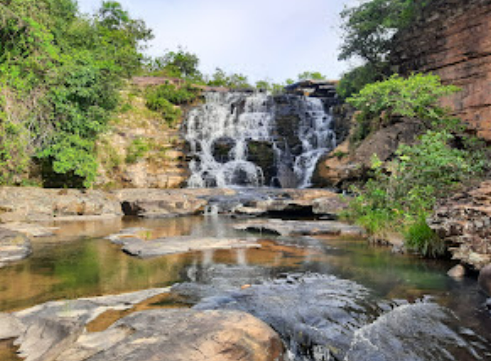

Para aproveitar ao máximo a visita às Cachoeiras de Três Marias, é recomendado levar itens essenciais, como: protetor solar, repelente, roupas confortáveis e calçados adequados para trilhas, além de alimentos frescos e frutas. Também é importante respeitar a natureza, preservar o local, não deixar lixo ou pertences para trás, mantendo-o limpo para as gerações futuras. Aventure-se, encante-se, relaxe e aproveite com consciência.
É um lugar lindo a cachoeira tem 3 quedas e outras quedas de menor porte e poços para banho; entre paredões e canyons de aproximadamente 18 metros de altura, tem pontos em que se pode andar sobre as pedras, não é difícil o acesso, fica entre o hotel Náutico e o Iate clube Náutico. Tem que passar por uma trilha um tanto perigosa, pois tem certas partes de caminho estreito.

Localizada a apenas 40 km da cidade de Três Marias. Tem cerca de 3 metros de altura, sua imponente piscina natural impressiona com a largura de 25 metros, um cenário de beleza indescritível, oferece também trilhas nos arredores da cachoeira, é um convite irrecusável para os amantes da natureza.


A cachoeira da Barreirama fica localizada na fazenda de mesmo nome, a apenas 12km do centro de Três Marias. Sua queda é formada pelo riacho Pindaíba que deságua na represa. A queda d 'água principal possui aproximadamente 30 metros até o poço de águas cristalinas cercado pela exuberância da vegetação ao redor.
A apenas 34 km de Três Marias, no Vilarejo das Pedras, conheça o lugar perfeito para um piquenique em família ou um momento de contemplação, você será recebido pelo calor e hospitalidade dos moradores de estilo de vida tranquilo e acolhedor, o Vilarejo oferece trilhas que o levarão a lugares espetaculares, quedas d'água majestosas. O Vilarejo não tem restaurantes, mas tem a venda do Tonho Maçarico, no molde antigo de vendinha local. Mas o usual aqui é levar sua própria comida e compartilhar, um verdadeiro piquenique ao ar livre, em meio a paisagens deslumbrantes.

A apenas 10 km da cidade de Três Marias, tem acesso fácil e prático; de águas puras e cristalinas, essa cachoeira é um refúgio perfeito, uma queda d'água de 18 metros de altura e uma largura de 25 metros e ainda oferece uma trilha de aproximadamente 1 hora de duração nas redondezas para quem busca relaxamento, aventura e contato direto com a natureza.

Com quatro quedas impressionantes, a cachoeira do Guará é formada pelo rio de mesmo nome, A queda principal delas possui oito metros de altura por 30 metros de largura,seguida por uma corredeira no rio. A 46 km de Três Marias sua visão é um espetáculo de tirar o fôlego em um ambiente tranquilo e refrescante, perfeito para relaxar e apreciar a natureza exuberante ao redor, a é próprio para trilhas e caminhadas, permite explorar a vegetação abundante e a vida selvagem da região.

Situada no Recanto da Zezé, entrada pelo Beira Rio, já do lado de São Gonçalo do Abaeté, o outro lado da ponte sobre o Rio São Francisco, não tem localização online. Em uma trilha de 30 minutos de descida, a Cachoeira das Palmeiras apresenta uma linda queda d’água e um bonito paredão, possui um poço muito bom para banho e uma segunda queda com um poço menor. As águas, geralmente, são límpidas, exceto em época de chuvas em que fica um pouco barrenta e ainda assim, não impede de curtir o passeio e o banho.
Também situada em São Gonçalo do Abaeté, do outro lado da ponte sobre o Rio São Francisco. Mais próxima do distrito de Canoeiros.
Muito bonita, frequentada por muitos ciclistas, mas, ainda não mapeada.